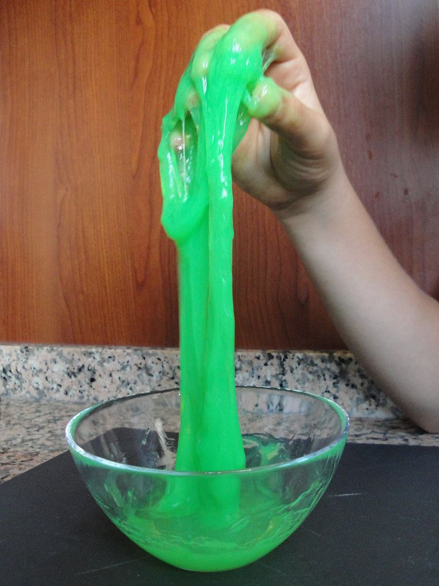

ACM-ICPC World Finals 2015 · Problem G

Your hometown has hired some contractors – including you! – to manage its municipal pipe network. They built the network, at great expense, to supply Flubber to every home in town. Unfortunately, nobody has found a use for Flubber yet, but never mind. It was a Flubber network or a fire department, and honestly, houses burn down so rarely, a fire department hardly seems necessary.
In the possible event that somebody somewhere decides they want some Flubber, they would like to know how quickly it will flow through the pipes. Measuring its rate of flow is your job.
You have access to one of the pipes connected to the network. The pipe is l meters long, and you can start the flow of Flubber through this pipe at a time of your choosing. You know that it flows with a constant real-valued speed, which is at least v1 meters/second and at most v2 meters/second. You want to estimate this speed with an absolute error of at most 2t meters/second.
Unfortunately, the pipe is opaque, so the only thing you can do is to knock on the pipe at any point along its length, that is, in the closed real-valued range [0, l]. Listening to the sound of the knock will tell you whether or not the Flubber has reached that point. You are not infinitely fast. Your first knock must be at least s seconds after starting the flow, and there must be at least s seconds between knocks.
Determine a strategy that will require the fewest knocks, in the worst case, to estimate how fast the Flubber is flowing. Note that in some cases the desired estimation might be impossible (for example, if the Flubber reaches the end of the pipe too quickly).
The input consists of multiple test cases. The first line of input contains an integer c (1 ≤ c ≤ 100), the number of test cases. Each of the next c lines describes one test case. Each test case contains the five integers l, v1, v2, t and s (1 ≤ l, v1, v2, t, s ≤ 109 and v1 < v2), which are described above.
For each test case, display the minimal number of knocks required to estimate the flow speed in the worst case. If it might be impossible to measure the flow speed accurately enough, display impossible instead.
3 1000 1 30 1 1 60 2 10 2 5 59 2 10 2 5
5 3 impossible